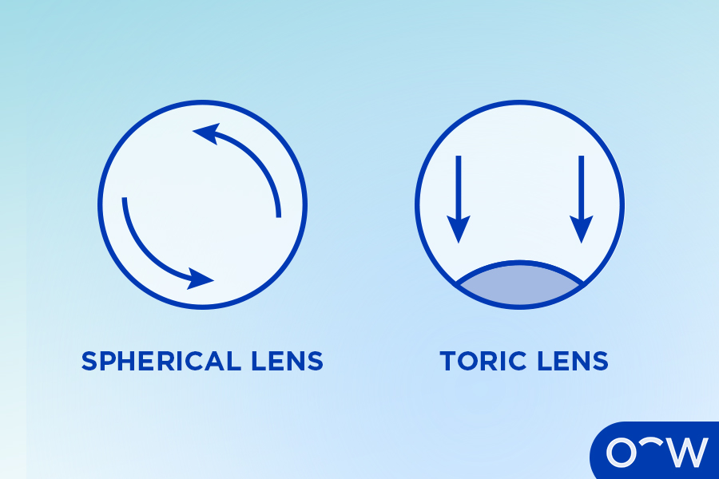

Silicone Hydrogel Contact Lenses:
Silicone hydrogel contact lenses are a type of soft contact lenses
made from a silicone hydrogel material.
Rigid Gas Permeable (RGP) Contact Lenses:
Rigid gas permeable (RGP) contact lenses are a type of hard contact
lenses, made with oxygen-permeable polymers.
Toric Contact Lenses:
Toric contact lenses are specifically designed to correct astigmatism.
Scleral Contact Lenses:
Scleral contact lenses are a type of hard contact lens that are bigger
than most contact lenses, resting on the sclera part of the eye, as
opposed to the cornea.
Cosmetic (Decorative) Contact Lenses:
Cosmetic (decorative) contact lenses are contacts used for aesthetic
and cosmetic purposes, as opposed to vision correction.
Progressive or Multifocal Contact Lenses:
Progressive or multifocal contact lenses are contacts that have three
prescriptions over one lens to assist with near, far and
middle-distance vision.
Orthokeratology (Ortho-K) Contact Lenses:
Ortho-K contact lenses are contacts most often worn at night to
reshape the cornea and help treat vision issues such as myopia.
Daily Disposable Contact Lenses:
Daily disposable contact lenses are contacts worn once then disposed
of.
Extended Wear Contact Lenses:
Extended wear contact lenses are contacts designed to be worn for an
extended period of time.
Planned Replacement Contact Lenses:
Planned replacement contact lenses are contacts worn for a
predetermined period before being replaced.
PMMA Contact Lenses:
PMMA contact lenses are an older type of contact lens made using
polymethyl methacrylate.
Hybrid Contact Lenses:
Hybrid contact lenses are contacts that are a combination of hard and
soft contact lenses with a hard centre and a soft edge.
1. Silicone Hydrogel Contact Lenses
Content
2. Rigid Gas Permeable (RGP) Contact Lenses
Content
3. Toric Contact Lenses
Content

4. Scleral Contact Lenses
Content
5. Cosmetic (Decorative) Contact Lenses
Content
6. Progressive or Multifocal Contact Lenses
Content
7. Orthokeratology (Ortho-K) Contact Lenses
Content
8. Daily Disposable Contact Lenses
Content
9. Extended Wear Contact Lenses
Content
10. Planned Replacement Contact Lenses
Content
11. PMMA Contact Lenses
Content
12. Hybrid Contact Lenses
Content
How to Choose What Type of Contact Lens to Use?
Content
Discuss with your optometrist:
When choosing contact lenses, you will need to discuss your options
with an optometrist who can provide advice on what contacts may be
best for your lifestyle and prescription.
How often you wear them:
How often you are planning to wear your contacts can impact your
choice as there are types such as rigid gas permeable contacts that
need to be worn daily to remain comfortable.
Prescription needs:
Your prescription can determine what type of contact lenses you need.
For example, if you need vision correction for multiple refractive
errors you may need multifocal (progressive) contacts.
Daily or extended wear contacts:
There are two main types of contacts in terms of wear schedule, which
are daily wear or extended wear. Daily wear are worn during the day
and taken out at night. Extended wear can be worn in the day and
overnight for one to multiple nights in a row depending on the
specific type.
How Does a Contact Lens Work?
Content
How Useful are Contact Lenses?
Content
What Type of Contact Lens Is For Presbyopia?
Content
What is the Best Type of Contact Lens for Hyperopia?
Content
How to Know What Type of Contact Lens To Use for Astigmatism?
Content
What Type of Contact Lens is Best For Myopia?
Content
What are the Advantages of Contact Lenses?
Content
Great for sports:
Contact lenses are a great option for people who play sports and are
involved in other forms of physical activity as they do not get in the
way or are at risk of falling off your face. Wearing glasses when
playing sports can be dangerous and could damage a person’s eyes if
you get hit in the face.
Natural field of view:
Wearing contacts provides a natural field of view as they are placed
directly on the eye rather than over them like glasses. Therefore,
there is less obstruction as the contacts move with your eyes.
Less likely to get dirty or smudged:
Contact lenses are less likely to get dirty or smudged than glasses as
they rest in the eye and are not touched by the hands throughout the
day. It is important to clean your contact lenses as directed however
as they may still collect dirt and debris.
What are the Disadvantages of Contact Lenses?
Content
Dry eyes:
Wearing contact lenses may increase the risk of developing dry eyes
due to the increased friction between the eye and the contact lens.
Eye infection:
Contact lenses may lead to the development of an eye infection known
as keratitis, which can occur as a result of an eye injury or wearing
contact lenses for extended periods of time, which can lead to a
build-up of protein deposits and debris.
High-maintenance:
Contact lenses require high-maintenance care to ensure they are stored
properly and cleaned well before and after use. It is important to
follow a specific consistent cleaning regimen to prevent eye
infections and general discomfort in the eye.